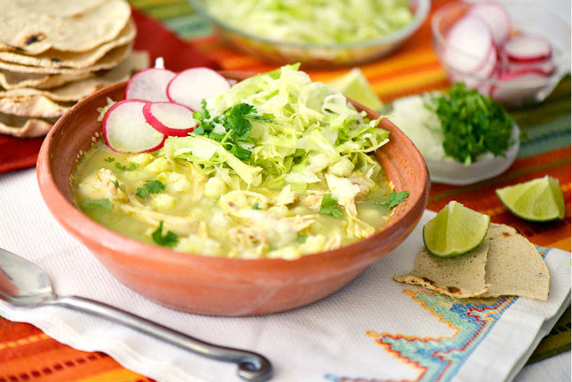

Página de inicio
Pozole Blanco

Platillo de la cocina mexicana que consiste en una sopa de gran tamaño que contiene carne de cerdo y porciones generosas de maíz cacahuacentle cocido y reventado; se sirve en un plato especial muy hondo llamado plato pozolero. En la mesa se condimenta con jugo de limón, sal, salsa picante o chile piquín molido, lechuga y rábanos rebanados, cebolla picada y orégano molido. Es una preparación de origen prehispánico.
Ingredientes:
- 5 litros de agua
- 1 cebolla cortada a la mitad
- 6 dientes de ajo
- Sal al gusto
- 1 Kg de maíz pozolero precocido
- 1 Kg de falta de cerdo cortada en trozos
- 600 gramos de espinazo de cerdo cortado en trozos
- Hojas de laurel
- 1 lechuga romana desinfectada y fileteada
- 3 aguacates cortados en rebanadas
- 1 taza de rábanos cortados en rodajas delgadas
- 70 gramos de chicharrón de cerdo en trozos
- Orégano al gusto
- Limón al gusto
- Tostadas de maíz
- 1 taza de crema
- 100 gramos de queso fresco desmoronado
Preparación:
-
Calienta el agua con 1 cebolla, el ajo y la sal, cuando suelte el primer hervor añade el maíz, tapa y cocina por 1 hora con 20 minutos o hasta que esté tierno. Añade la falda, el espinazo de cerdo, el laurel y cocina por 1 hora con 25 minutos o hasta que la carne esté suave. Retira el ajo, la cebolla, las hojas de laurel y la falda de cerdo; deshebra la carne y reserva.
-
Sirve el pozole con la carne, la lechuga, el aguacate, los rábanos, el chicharrón, el orégano, la cebolla morada, los chiles y el jugo de limón.
-
Acompaña con las tostadas, la crema y el queso.